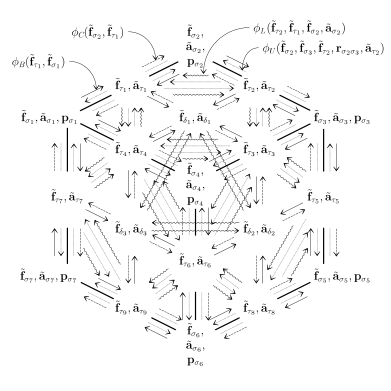

The defined mechanism for message passing of harmonic expansions on
geometrically realised cell complexes enables non-dyadic and
trans-hierarchical communication of geometric quantities, while
maintaining feature stability under rotation, reflection, and
translation in three-dimensional Euclidean space.
Introduction
Models utilising either linear message passing, which involves
matrix-vector multiplications with scalars, or nonlinear message
passing through MLP parametrisations, inherently lack the capability
to encode directional information. This limitation arises because
scalar fields, the common basis for these models, are invariant to
transformations. Hence, in network architectures predicated on
scalar-based message passing, only attributes exhibiting
transformational invariance can be employed. While this invariance
ensures robustness to arbitrary transformations, it poses a constraint
when rotation $G$-mapping is a requisite feature of the model.
Therefore, an alternative to scalar feature fields is necessary for
capturing and representing directional attributes effectively. To
circumvent this limitation and introduce directional attributes into
feature representation, we use spectral feature fields. While still
operating within the confines of Euclidean space \(X = \mathbb{R}^d\),
the utilisation of spectral feature fields affords us the capacity to
embed features encapsulating directional attributes. This enrichment
extends our feature space beyond mere scalar values, enabling the
inclusion of orientation and directional relationships inherent in the
data. This necessitates specialised MLPs tailored to process such
directional information effectively. This leads us to steerable neural
networks, where the SEGNN
offers a
general framework for $\mathrm{E}(3)$ $G$-equivariant graph
representation learning. This framework allows for both node and edge
attributes to be geometric quantities. Spectral feature fields are
inherently $G$-equivariant, facilitating transformation operations
within the group and thus offering a robust means of incorporating
directional information within the network. Our main focus lies in
ensuring not only translation but also rotation $G$-equivariance.
Traditional methods, which might employ regular group convolution,
would necessitate a grid structure over \(\mathrm{SO}(d)\) in order to
achieve rotation $G$-mapping. Specifically, the convolution kernel
must be rotated across all possible orientations and the subsequent
responses aggregated. This implies expanding the initial graph to
capture a grid of rotations linked to each node, which introduces both
computational and methodological challenges, especially when working
with \(\mathrm{SO}(3)\). Spectral feature fields offer a resolution to
these challenges by facilitating the development of linear and
nonlinear layers as $G$-maps that circumvent the need for grid
structures on subgroups like \(\mathrm{SO}(3)\). Rather than sampling
rotations on a grid, a function defined on \(\mathrm{SO}(3)\) can
encode the convolution operator's response for all possible rotations.
Models reliant on scalar feature fields are fundamentally limited in
their capability to incorporate directional information due to the
invariance properties of scalars. Spectral feature fields present an
effective solution, integrating seamlessly with existing steerable
neural network architectures and alleviating computational
inefficiencies associated with rotational $G$-equivariance. A message
function designed to capture directional attributes can be expressed
as: \[\mathbf{m}_{ij} = \phi_m (\mathbf{f}_i, \mathbf{f}_j,
Y(\mathbf{x}_j, \mathbf{x}_i)),\] where \(Y(\mathbf{x}_j,
\mathbf{x}_i)\) is the harmonic embedding of the inter-nodal
directional information between positions \(\mathbf{x}_j\) and
\(\mathbf{x}_i\). By integrating this directional information, the
message passing mechanism gains the ability to account for orientation
and directional relationships between nodes. Expanding upon this
framework, our subsequent focus centres on generalising the message
passing formulation to encompass cell complexes. We aim to delineate
how this paradigm can be adapted to ingest and propagate directional
information across various dimensional cells within these complexes.
Geometric message passing on cell complexes with harmonically expanded
feature fields
Boundary adjacency message passing on a cell 2-complex.
We define the boundary adjacency message function
$\tilde{\mathbf{m}}_{\mathcal{B}, \sigma \tau}$ on a geometric cell
complex $\Delta$ as follows: \begin{equation} \label{message-eq1}
\begin{aligned} \tilde{\mathbf{m}}_{\mathcal{B}, \sigma \tau}^{t+1} &=
\bigoplus_{\tau \in \mathcal{B}(\sigma)}\biggl(\phi_{\mathcal{B}}
(\underbrace{\tilde{\mathbf{f}}_\sigma^{t},
\tilde{\mathbf{f}}_\tau^{t}}_{\tilde{\mathbf{h}}_{\mathcal{B}, \sigma
\tau}}) \biggl), \\ & \quad {\scriptstyle k_{\sigma} = k_{\tau} + 1, \
\tilde{\mathbf{m}}_{\mathcal{B}}^{t+1}(\sigma) = \emptyset \ \forall
\sigma_{k=0} } \end{aligned} \end{equation} Here, the message travels
from $\tau$ to $\sigma$, where $\tau$ is on the boundary of $\sigma$.
For example, $\sigma$ can be an edge and $\tau$ can be a node on its
boundary, or $\sigma$ can be a face and $\tau$ can be an edge on its
boundary. The boundary message function $\phi_{\mathcal{B}}$ takes the
features of the receiver simplex, $\tilde{\mathbf{f}}_\sigma$, and the
features of the sender simplex, $\tilde{\mathbf{f}}_\tau$ as input. If
$\sigma$ is a $0$-cell, the message $\tilde{\mathbf{m}}_{\mathcal{B},
\sigma \tau}$ is an empty set since a $0$-cell has no interior or
boundary.
Co-boundary adjacency message passing on a cell 2-complex.
We define the co-boundary adjacency message function
$\tilde{\mathbf{m}}_{\mathcal{C}, \sigma \tau}$ as: \begin{equation}
\label{message-eq2} \begin{aligned} \tilde{\mathbf{m}}_{\mathcal{C},
\sigma \tau}^{t+1} &= \bigoplus_{\tau \in
\mathcal{C}(\sigma)}\biggl(\phi_{\mathcal{C}}
(\underbrace{\tilde{\mathbf{f}}_\sigma^{t},
\tilde{\mathbf{f}}_\tau^{t}}_{\tilde{\mathbf{h}}_{\mathcal{C}, \sigma
\tau}}) \biggl), \\ & \quad {\scriptstyle k_{\sigma} = k_{\tau} - 1, \
\tilde{\mathbf{m}}_{\mathcal{C}, \sigma \tau}^{t+1} = \emptyset \
\forall \sigma_{k=3} } \end{aligned} \end{equation} While the boundary
adjacency message travels from a lower-dimensional simplex to a
higher-dimensional one, the co-boundary adjacency message travels down
the dimensional hierarchy. This means that a cell, denoted as $\tau$,
sends a message to another cell, $\sigma$, located on its boundary
(for instance, $\sigma$ could be a 1-cell or edge on the boundary of
the 2-cell $\tau$). Given that the maximum dimension of our embedding
space, $\mathbb{R}^{d}$, is $d=3$, if $\sigma$ is a $3$-cell, then the
message $\tilde{\mathbf{m}}_{\mathcal{C}, \sigma \tau}$ becomes an
empty set, as there isn't a $4$-cell present as a co-boundary of
$\sigma$.
Lower adjacency message passing on a cell 2-complex.
We define the lower adjacency message function
$\tilde{\mathbf{m}}_{\mathcal{L}, \sigma \tau}$ as: \begin{equation}
\label{message-eq3} \begin{aligned} \tilde{\mathbf{m}}_{\mathcal{L},
\sigma \tau}^{t+1} &= \bigoplus_{\tau \in \mathcal{L}
(\sigma)}\biggl(\phi_{\mathcal{L}}
(\underbrace{\tilde{\mathbf{f}}_\sigma^{t},
\tilde{\mathbf{f}}_\tau^{t},
\tilde{\mathbf{f}}_{\delta}^{t}}_{\tilde{\mathbf{h}}_{\mathcal{L},
\sigma \tau}}, \tilde{\mathbf{a}}_\delta)\biggl), \\ & \quad
{\scriptstyle k_{\sigma} = k_{\tau}, \ k_{\delta} = k_{\sigma}+1, \
\tilde{\mathbf{m}}_{\mathcal{L}, \sigma \tau}^{t+1} = \emptyset \
\forall \sigma_{k=0},\tau_{k=0} } \end{aligned} \end{equation} The
lower adjacency message is transmitted between two cells of the same
dimension $k$ that share a common cell of dimension $k-1$ as their
face. For example, two $1$-cells or edges are considered lower
adjacent because they both have the same $0$-cell (vertex) as their
face. Since $0$-cells do not have a face, the message
$\tilde{\mathbf{m}}_{\mathcal{L}}$ is an empty set if $\sigma$ and
$\tau$ are $0$-cells. Note that the input to the message function
$\phi_{\mathcal{L}}$ includes the features of the lower-adjacent cell,
$\tilde{\mathbf{f}}_{\delta}$, and its attributes
$\tilde{\mathbf{a}}_\delta$. Note that attributes and features refer
to different types of information associated with the cells in a
complex. While features refer to learned representations of the cells,
attributes typically refer to domain-specific information that is
associated with the cells.
Upper adjacency message passing on a cell 2-complex.
We define the upper adjacency message function
$\tilde{\mathbf{m}}_{\mathcal{U}, \sigma \tau}$ as: \begin{equation}
\label{message-eq4} \begin{aligned} \tilde{\mathbf{m}}_{\mathcal{U},
\sigma \tau}^{t+1} &= \bigoplus_{\tau \in \mathcal{U}
(\sigma)}\biggl(\phi_{\mathcal{U}}
(\underbrace{\tilde{\mathbf{f}}_\sigma^{t},
\tilde{\mathbf{f}}_\tau^{t}, \tilde{\mathbf{f}}_{\delta}^{t},
\mathbf{r}_{\sigma \tau}}_{\tilde{\mathbf{h}}_{\mathcal{U}, \sigma
\tau}}, \tilde{\mathbf{a}}_{\delta})\biggl), \\ & \quad {\scriptstyle
k_{\sigma} = k_{\tau}, \ k_{\delta} = k_{\sigma} + 1, \
\mathbf{r}_{\sigma \tau} \neq \emptyset \text{ iff } k_{\sigma} =
k_{\tau} = 0} \end{aligned} \end{equation} The upper adjacency message
is transmitted between two cells of the same dimension $k$, namely
$\sigma$ and $\tau$, which share a common upper-adjacent cell of
dimension $k+1$, referred to as $\delta$. For example, $\sigma$ and
$\tau$ can be $1$-cells or edges with a common upper-adjacent $2$-cell
or face $\delta$. The quantity $\mathbf{r}_{\sigma \tau}$ represents
the relative distance between two $0$-cells $\sigma$ and $\tau$, $|
\mathbf{p}_{\tau} - \mathbf{p}_{\sigma} |$ or squared relative
distance $| \mathbf{p}_{\tau} - \mathbf{p}_{\sigma} |^2$. If $\sigma$
and $\tau$ are cells of any other order, then $\mathbf{r}_{\sigma
\tau}$ is an empty set. We define the cell update function as:
\begin{equation} \notag \tilde{\mathbf{f}}^{t+1}_{\sigma} = \phi_f
(\underbrace{ \tilde{\mathbf{f}}^{t}_{\sigma},
\tilde{\mathbf{m}}_{\mathcal{B}, \sigma \tau}^{t},
\tilde{\mathbf{m}}_{\mathcal{C}, \sigma \tau}^{t},
\tilde{\mathbf{m}}_{\mathcal{L}, \sigma \tau}^{t+1},
\tilde{\mathbf{m}}_{\mathcal{U}, \sigma \tau}^{t+1}
}_{\tilde{\mathbf{h}}_{\sigma}}, \tilde{\mathbf{a}}_{\sigma})
\end{equation}

Message passing on a cell complex $\Delta^2$, geometrically
realised in $\mathbb{R}^3$. $k(\sigma)=0$, $k(\tau)=1$,
$k(\delta)=2$. $\tilde{\mathbf{f}}$ and $\tilde{\mathbf{a}}$: cell
features and attributes, respectively, in spherical harmonics
basis. All $\sigma$ associated with a position $\mathbf{p}$.
Boundary adjacency message functions $\phi_{\mathcal{B}}$ (solid).
Co-boundary adjacency message functions $\phi_{\mathcal{C}}$
(dashed). Lower adjacency message functions $\phi_{\mathcal{L}}$
(sinusoidal). Upper adjacency message functions
$\phi_{\mathcal{U}}$ (dotted).
Message passing layer. Updates steerable cell features
$\tilde{\mathbf{f}}^{\prime \prime \prime}_{\sigma} \gets
\tilde{\mathbf{f}}_{\sigma}$.
$\sigma$- and $\Delta$-level readout
Architecture outline for cell-level predictions
$\hat{\mathbf{y}}_n$ and complex-level predictions
$\hat{\mathbf{y}}_{\Delta}$. Example with cell complex $\Delta$ of
dimension $2$ embedded in ambient space $\mathbb{R}^3$. (a)
Geometric cell complex $\Delta$ with cell features $\mathbf{f}_i
\in \mathbb{R}^{C_c}$, cell attributes $\mathbf{a}_i \in$
$\mathbb{R}^{C_a}$, and 0 -cell positions $p_i \in \mathbb{R}^3$.
(b) Spherical harmonic transform of features, ${\mathbf{f}_i
\rightarrow \tilde{\mathbf{h}}_i}$ and attributes, $\mathbf{a}_i
\rightarrow \tilde{\mathbf{a}}_i$. (c) Message passing mechanism;
updated cell features $\tilde{\mathbf{h}}_i$. (d) Local
(cell-level) readout MLPs with cell features,
$\tilde{\mathbf{h}}_i$, as input. (e) Reduction to multi-sets of
features wrt to cell dimension; global (complex-level) embedding,
$\tilde{\mathbf{h}}_{\Delta} =
\left(\left\{\tilde{\mathbf{h}}_\sigma\right\}_{k_\sigma=0},\left\{\tilde{\mathbf{h}}_\sigma\right\}_{k_\sigma=1},\left\{\tilde{\mathbf{h}}_\sigma\right\}_{k_\sigma=2}\right)$,
and readout MLP. (f) Local predictions, $\hat{\mathbf{y}}_i$. (g)
Global prediction, $\hat{\mathbf{y}}_{\Delta}$.
Once the cell complex structured data inputs have been transformed
into latent representations, a wide range of learning tasks can be
performed on the transformed data. Two principal learning tasks that
can be undertaken are cell-level prediction and complex-level
prediction. After the final message passing layer $L$, we can apply a
readout function $\hat{\mathbf{y}}$, which can take different forms
depending on the task of interest. One option is that
$\hat{\mathbf{y}}$ aggregates in a permutation invariant way the
features of cells of the same dimension $k$, after which it applies a
non-linearity $\phi:$ $$ {\hat{\mathbf{y}}_{\sigma} = \phi \left(
\bigoplus_{\sigma_{k=0} \in \Delta} \mathbf{h}^L_{\sigma},
\bigoplus_{\sigma_{k=1} \in \Delta} \mathbf{h}^L_{\sigma}, \dots ,
\bigoplus_{\sigma_{k=n} \in \Delta} \mathbf{h}^L_{\sigma}\right)} $$
Another task may not need the distinguishing of cells by the their
dimension and the readout function can aggregate the features of all
cells (of different dimensions) in order to obtain an complex-level
output: $$ {\hat{\mathbf{y}}_{\Delta} = \phi \left( \bigoplus_{\sigma
\in \Delta} \mathbf{h}^L_{\sigma}\right)} $$ In both cases, the latent
representations of the cells are combined using suitable aggregation
methods, such as direct sum operations or other fusion techniques. It
is important to note that cell-level and complex-level prediction
tasks are not mutually exclusive, and a learning model can be designed
to address both simultaneously. By jointly learning from the
individual cells and the complex as a whole, the model can leverage
the local and global information encoded in the latent representations
to gain a comprehensive understanding of the cell complex. This
combination of tasks allows for a more comprehensive analysis,
enabling the extraction of both fine-grained and global insights from
the transformed cell complex data.